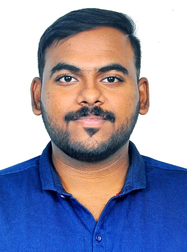

VISAKH S NATH
Associate Software Engineer at
Clevero
Contact
CAREER OBJECTIVE
A computer programming enthusiast looking to pursue a dynamic and
challenging career with an Organization of repute,
where I can imply my coding skills, technologies that I am familiar with,
innovative thoughts that will benefit the
Organization in the long
run, which will aid me to widen my spectrum of knowledge.
STRENGTH
- Database Programming and Management
- Computer Hardware Troubleshooting
- Software Programming and Testing
- Good Communication skills , Leadership , Project Management
ACADEMIC QUALIFICATION
| Course |
Institution |
Board/University |
Year of Completion |
B.Tech
(Computer Science and Engineering) |
Toc H Institute of Science and Technology,Arakunnam |
KTU |
2019 |
| Class XII |
Chinmaya VIdyalaya,Tripunithura |
CBSE |
2015 |
| Class X |
Chinmaya VIdyalaya,Tripunithura |
CBSE |
2013 |
SOFTWARE EXPERIENCE
| PROGRAMMING LANGUAGES |
OPERATING SYSTEM/MISCELLANEOUS |
| C |
Microsoft Windows |
| Python |
Linux |
| HTML |
Android |
| Mysql |
Mac |
| Java |
| PHP(basics) |
| Javascript(basics) |
Javascript(basics) |
PROJECT
- IGLET: SMART HELMET (Design Project)
- SMART CONSTRUCTOR HELMET(Major Project)
WORKSHOPS AND TRAINING
-
Participated in 6th International Conference on “Innovations in
Bio-Inspired Computing and Applications”
held during 16th to 18th
December 2015
-
Undergone internship with
KELTRON on working different
groups and business units.(2016)
-
Undergone internship with
Aabasoft Technologies,
Kochi on Java Basics and Android. (2017)
- Attended workshop on Ruby Language. (2017)
- Attended workshop on Machine Learning under MieRobot. (2018)
MEMBERSHIP IN PROFESSIONAL BODIES
PERSONAL DETAILS
Date of Birth : 11/12/1996
Gender : Male
Languages Known : English,Malayalam,Tamil
Marital Status : Single
Address : Jayanivas House
Vyasapuram
Panangad,Kochi
Kerala-682506
ACHIEVEMENTS
- Awarded best goalkeeper for the school team (2014).
- Elected as a member of Student Council in school.
-
Volunteer for Inter-Department Arts and Inter-Department Sports
competitions at college.
-
Co-organized CSI Student Summit at Toc H Institute of Science and
Technology.
-
Represented my design project, IGLET, in the National Level
Inter-College Techno Management, IKNOCK18.
REFERENCES
-
Assistant Professor Elsaba Jacob, Department of Computer Science and
Engineering,
Toc H Institute of Science and Technology,
Arakkunnam, Ernakulam-682313 Mob no: +91 9447666356
-
Assistant Professor Abin Oommen Philip, Department of Computer Science
and Engineering,
Toc H Institute of Science and Technology,
Arakkunnam, Ernakulam-682313 Mob no: +91 9809238007